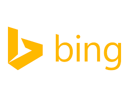

Popular Search Engines
Google is an American multinational technology company that specializes in Internet-related services and products. These include online advertising technologies, search, cloud computing, software, and hardware. Google was founded in 1998 by Larry Page and Sergey Brin while they were Ph.D. students at Stanford University, in California. Together, they own about 14 percent of its shares, and control 56 percent of the stockholder voting power through supervoting stock. They incorporated Google as a privately held company on September 4, 1998. An initial public offering (IPO) took place on August 19, 2004, and Google moved to its new headquarters in Mountain View, California, nicknamed the Googleplex. In August 2015, Google announced plans to reorganize its various interests as a conglomerate called Alphabet Inc. Google, Alphabet's leading subsidiary, will continue to be the umbrella company for Alphabet's Internet interests. Upon completion of the restructure, Sundar Pichai was appointed CEO of Google; he replaced Larry Page, who became CEO of Alphabet.
The company's rapid growth since incorporation has triggered a chain of products, acquisitions, and partnerships beyond Google's core search engine (Google Search). It offers services designed for work and productivity (Google Docs, Sheets and Slides), email (Gmail/Inbox), scheduling and time management (Google Calendar), cloud storage (Google Drive), social networking (Google+), instant messaging and video chat (Google Allo/Duo), language translation (Google Translate), mapping and turn-by-turn navigation (Google Maps/Waze), video sharing (YouTube), notetaking (Google Keep), and photo organizing and editing (Google Photos). The company leads the development of the Android mobile operating system, the Google Chrome web browser, and Chrome OS, a lightweight operating system based on the Chrome browser. Google has moved increasingly into hardware; from 2010 to 2015, it partnered with major electronics manufacturers in the production of its Nexus devices, and in October 2016, it released multiple hardware products (including the Google Pixel smartphone, Home smart speaker, Wifi mesh wireless router, and Daydream View virtual reality headset). The new hardware chief, Rick Osterloh, stated: "a lot of the innovation that we want to do now ends up requiring controlling the end-to-end user experience". Google has also experimented with becoming an Internet carrier. In February 2010, it announced Google Fiber, a fiber-optic infrastructure that was installed in Kansas City; in April 2015, it launched Project Fi in the United States, combining Wi-Fi and cellular networks from different providers; and in 2016, it announced the Google Station initiative to make public Wi-Fi around the world, with initial deployment in India.
Alexa, a company that monitors commercial web traffic, lists Google.com as the most visited website in the world. Several other Google services also figure in the top 100 most visited websites, including YouTube and Blogger. Google is the most valuable brand in the world[5], but has received significant criticism involving issues such as privacy concerns, tax avoidance, antitrust, censorship, and search neutrality. Google's mission statement, from the outset, was "to organize the world's information and make it universally accessible and useful", and its unofficial slogan was "Don't be evil". In October 2015, the motto was replaced in the Alphabet corporate code of conduct by the phrase "Do the right thing".
Naver (Hangul: 네이버) is a popular Web portal in South Korea, owned by Naver Corporation. Naver was launched in June 1999 by ex-Samsung employees, and it debuted as the first Web portal in Japan that used its own proprietary search engine. Among Naver's features is "Comprehensive Search", launched in 2000, which provides results from multiple categories on a single page. It has since added new services such as "Knowledge Search", launched in 2002. It also provides Internet services including a news service, an e-mail service, an academic thesis search service, and a children's portal. In 2005, Naver launched Happybean, the world's first online donation portal, which allows users to find information and make donations to over 20,000 civil society and social welfare organizations.
According to pitchone, Naver handled only 48% of websearches in South Korea in 2016.[3] (According to techforkorea, Naver handled 77% of all web searches in South Korea in July 2014[4]) Naver is the fifth most used search engine in the world, following Google search, Yahoo!, Baidu and Bing. More than 25 million Koreans have Naver as the default browser start page.[5] Naver launched its service in Japan in 2009, marking their first expansion out of Korea.[6]
In 2013, Lee Hae-jin, the chairman and chief strategy of Naver, saw his stake value hover above 1 trillion won (US$939.4 million) on the back of its messenger service LINE.

Daum (Korean: 다음) is a web portal in South Korea, like Naver and Nate. Daum offers many Internet services to web users, including a popular free web-based e-mail, messaging service, forums, shopping and news. The word "daum" means "next", but it can also be interpreted as Hanja "多音", meaning "many sounds".[1]
The popularity of Daum stems from the range of services it offers, but also from the fact that it was the first Korean web portal of significant size. Its popularity started when it merged with the then most popular e-mail service, daum.net or hanmail.net. After the merging, Daum started the forum service Daum Cafe which brought its firm status in the market. The term cafe and even internet cafe (Different from what is supposed to refer to in Western usage) is now used as the synonym for "Internet forum" in Korean.
From 2003, Daum started on-line direct automobile insurance by launching the subsidiary 'Daum Direct Auto Insurance' and from 2008, it became a partnership company with ERGO Insurance Group.
On August 2, 2004 Daum announced the purchase of Lycos for $95.4 million, and closed the transaction on October 6.[2] As part of a corporate restructuring to focus on mobile, social networks and location-based services, Daum sold Lycos for $36 million in August 2010 to Ybrant Digital, an internet marketing company based in Hyderabad, India.[3]
In 2006, they started a blogging service Tistory with 'Tatter and Company',[4] a blogging platform developing company and in July 2007, Daum took over all rights to manage the services.
The company also develops and distributes the freeware media player PotPlayer. In addition to its freeware media player(Daum tvPot), Daum Communications Corp. provides variety of services such as clouding service (Daum Cloud), Daum Dictionary (applicable on mobile devices), Daum Comics, and map service (Daum Maps).
Daum has about 874 employees as of March, 2009 and is the 2nd largest web portal service provider in South Korea in terms of daily visit.[citation needed]
In 2014, Daum merged with Kakao to form Daum Kakao. [5]

Baidu, Inc. (Chinese: 百度; pinyin: Bǎidù, anglicized /ˈbaɪduː/ "BY-doo"), incorporated on 18 January 2000, is a Chinese web services company headquartered at the Baidu Campus in Beijing's Haidian District.[6] It is one of the largest internet companies, and one of the premier AI leaders in the world.[7][8] The holding company of the group was incorporated in the Cayman Islands.[2]
Baidu offers many services, including a Chinese search engine for websites, audio files and images, as well as global mapping service Baidu Maps. Baidu offers 57 search and community services including Baidu Baike (an online, collaboratively built encyclopedia) and a searchable, keyword-based discussion forum.[9] Baidu was established in 2000 by Robin Li and Eric Xu. Both of the co-founders are Chinese nationals who studied in Peking University and worked overseas before returning to China. In December 2016, Baidu ranked 4th overall in the Alexa Internet rankings.[10][11]
Baidu's Global Business Unit, formed under the name of DU Group or DU Apps Studio, is an app developer with a wide variety of popular award-winning apps and services, accumulating over 1.6 billion monthly active users worldwide. It aims to provide innovative products, as well as new and exciting business models and ways to interact with technology, through AI and mobile devices. It has also established offices around the world including Brazil, India, Indonesia, Thailand, Egypt, Japan and the United States, with the goal of becoming the core player in shaping how technology works, in every continent. Its award-winning products include DU Battery Saver, DU Speed Booster, MoboMarket, DU Browser, Facemoji Keyboard, DU Flashlight, DU Security, DU Cleaner, DU Privacy Vault, DU Antivirus, Photo Wonder, DU Caller, DU Recorder, ES File Explorer, Simeji, and more. [12][13][14][15][16]
Baidu has the 2nd largest search engine in the world, and held a 76.05% market share in China's search engines market, the largest in the world, as of April 2017.[17][18][19] In December 2007, Baidu became the first Chinese company to be included in the NASDAQ-100 index.[20]
As of 2017, Baidu Search released Spider 3.0 which is capable of indexing over trillions of web pages.[21][22] Baidu offers multimedia content including MP3 music, and movies, and is the first in China to offer Wireless Application Protocol (WAP) and personal digital assistant (PDA)-based mobile search.
Baidu Brain, the company's AI-based artificial neural network has achieved a remarkable 97% accuracy rate in voice recognition and 99.7% rate in facial recognition, signalling the success of its AI development.[23]
Baidu Baike is similar to Wikipedia as an online encyclopedia; however, unlike Wikipedia, only registered users can edit the articles due to Chinese laws. While access to Wikipedia has been intermittently blocked or certain articles filtered in China since June 2004, there is some controversy about the degree to which Baidu cooperates with Chinese government censorship.[24]
The company also hosts a music service Baidu Music that has more than 200 million monthly active users, news service Baidu News Feed that has more than 100 million daily active users, and food delivery service Baidu Waimai that has more than 100 million monthly active users. On 4 December 2015, Baidu announced plans to merge with Taihe Entertainment Group to help the service compete with Apple Inc.'s Apple Music.[25][26]
In July 2017, Baidu announced that its ambitious Apollo autonomous driving program (often called the ‘Android of the autonomous driving industry’, an open source platform for self-driving that includes hardware, software and cloud data services for autonomous vehicles) has over 50 partners (automakers, tier 1 suppliers, component producers, startups, academic institutions, government departments, artificial intelligence and technology companies), including FAW Group, one of the major Chinese carmakers that will work with Baidu on commercialization of the technology. Other partners include worldwide auto companies Chery, Volkswagen, General Motors, Hyundai, Daimler AG (Mercedes-Benz), BYD, Ford, Changan Automobile, BAIC, JAC and Great Wall Motors, as well as global organisations Tsinghua University, Intel, ZTE, Bosch, Continental AG, Nvidia, Microsoft, Velodyne, TomTom, UCAR, Grab, AutonomouStuff, Horizon Robotics and more.[27][28][29][30][31][32]
By the end of 2020, Baidu hopes to offer a platform that can handle full autonomous driving on both urban roads and highways, and mass producing its own self driving cars at a later period. It also plans to use its voice interaction and AI operating system DuerOS that already has more than 100 partners (such as Nvidia, Haier, Media, HTC, Vivo, and Harman International), together with the Apollo platform to create the world's largest autonomous driving system with high-precision maps, and setting up Apollo companies around the world. Baidu has recently begun a spree of acquisitions targeting AI and technology start-ups to further advance its AI ambitions, it aims to become the global leader of Artificial Intelligence just as China outlines its plans to achieve global AI leadership by 2030, and to "make DuerOS the most widely used conversational AI platform in the world". Project Apollo has also been praised as "an important milestone for the automotive industry and artificial intelligence". According to a report, Baidu's self-driving AI technology may be valued at nearly US$650 billion and produce a US$120 billion annual revenue for the company by 2021, it will also boost its market cap to over US$1 trillion in the long term.[33][34][35][36][37][38][39][40]
Its first artificial intelligence (AI) developer conference Baidu Create was held at the China National Convention Center (CNCC) in Beijing on 5 July 2017, it convened Baidu executives and engineers as well as developers and experts across the AI industry.[41]
By the end of August 2017, Baidu's market cap rose to USD$80.67 billion, with a recent surge in its stocks, net profit and revenue.[42][43][44] It has announced partnership with AMD and will leverage the two companies' world-class technology and software engineering capabilities to create a comprehensive and open ecosystem to address the growing demand for data center workloads and provide more intelligent human-computer interaction, as well as working with JD.com to offer AI-driven advertising and app integration. At the same period, it has also led a joint investment of US$12 billion with Alibaba Group, Tencent, JD.com and Didi Chuxing, acquiring 35% of China Unicom's stakes. Baidu has created its own equity fund "Baidu Fund Partnership" to invest in internet and other technology endeavors, with China Life Insurance being its first partner.[45][46][47][48][49]

Bing is a web search engine owned and operated by Microsoft. The service has its origins in Microsoft's previous search engines: MSN Search, Windows Live Search and later Live Search. Bing provides a variety of search services, including web, video, image and map search products. It is developed using ASP.NET.
Bing, Microsoft's replacement for Live Search, was unveiled by Microsoft CEO Steve Ballmer on May 28, 2009, at the All Things Digital conference in San Diego, California, for release on June 1, 2009.[3] Notable new features at the time included the listing of search suggestions while queries are entered and a list of related searches (called "Explore pane") based on semantic technology from Powerset,[4] which Microsoft had acquired in 2008.[5]
In July 2009, Microsoft and Yahoo! announced a deal in which Bing would power Yahoo! Search.[6] All Yahoo! Search global customers and partners made the transition by early 2012.[7] The deal was altered in 2015, meaning Yahoo! was only required to use Bing for a "majority" of searches.[8]
In October 2011, Microsoft stated that they were working on new back-end search infrastructure with the goal of delivering faster and slightly more relevant search results for users. Known as "Tiger", the new index-serving technology had been incorporated into Bing globally since August that year.[9] In May 2012, Microsoft announced another redesign of its search engine that includes "Sidebar", a social feature that searches users' social networks for information relevant to the search query.[10]
As of November 2015, Bing is the second largest search engine in the US, with a query volume of 20.9%, behind Google on 63.9%. Yahoo! Search, which Bing largely powers, has 12.5%.[11]